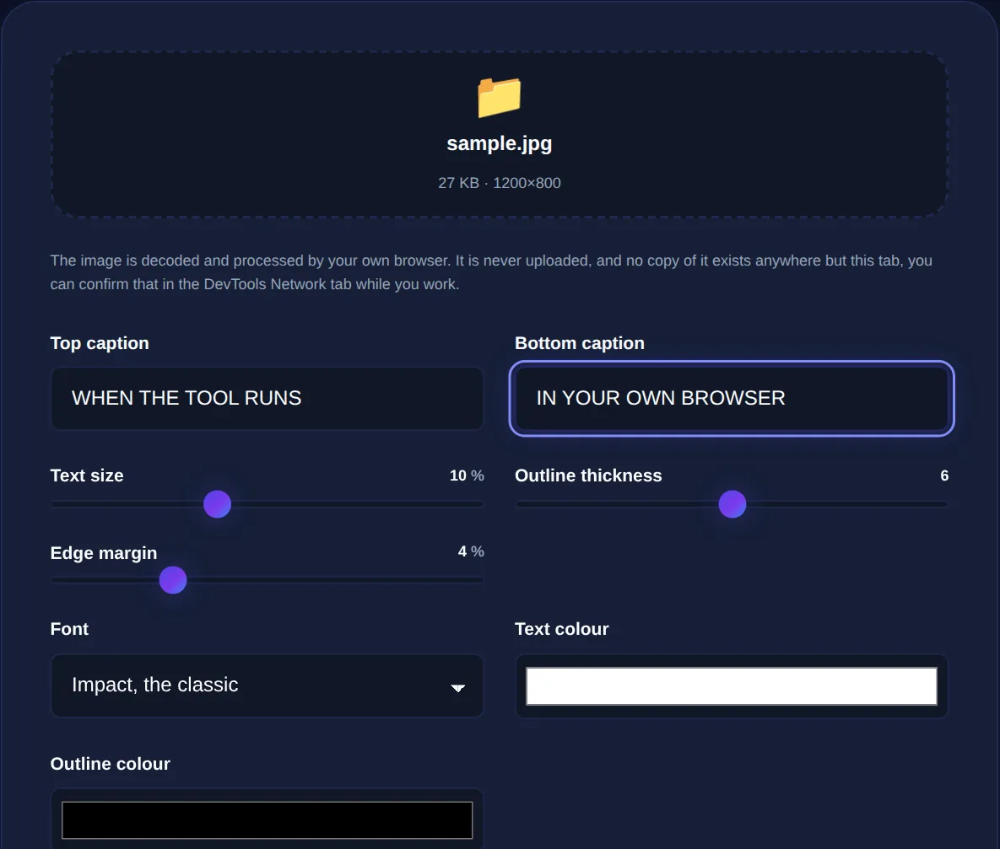

How to Make a Meme: Top and Bottom Text Done Right
The anatomy of the classic meme, why the white-outlined text style exists, and how to make one that reads instantly.
By Mubasher Hussain · Published 2026-07-25 · Updated 2026-09-01 · 1046 words · about 5 minute read
A meme, in the classic sense, is an image with bold text laid over it, usually a line at the top and a line at the bottom, that turns a picture into a joke or a comment. Making one is simple, but making one that reads instantly and looks right takes a couple of small conventions that have become a visual language of their own. The Meme Generator adds captions to any image in your browser, and this article explains how to do it well.
We will look at the anatomy of the standard meme, why the white-with-black-outline text style is used everywhere, and the practical steps to caption an image so the result is legible and shareable.
The anatomy of a classic meme
The traditional format is deliberately rigid, and that rigidity is what makes memes instantly readable. There is an image, a short line of top text setting up the idea, and a short line of bottom text delivering the punchline. The text is uppercase, bold, and centred. This structure works because it front-loads context and lands the joke at the bottom, matching how the eye moves down the image, and because uppercase bold text is readable even at thumbnail size in a fast-scrolling feed.

Why the outlined text style exists
The signature meme look, white text with a heavy black outline, usually in the Impact typeface, is not just tradition; it is a practical solution to a real problem. Memes are placed over photographs, which contain both light and dark areas. Plain white text vanishes against a bright sky; plain black text vanishes against shadow. The black outline around white letters guarantees the text stays legible over any background, light or dark, without needing a solid banner behind it. That is why the style spread and stuck.
Meme text works because it is brief. A line the eye can read in a second lands; a paragraph does not. If your caption needs more than a short phrase top and bottom, it is probably too complex for the format.
Steps to make a meme that lands
The mechanics are quick once you know the conventions:
- Choose an image whose expression or scene fits the joke, the picture does half the work.
- Write a short setup for the top and a shorter punchline for the bottom.
- Use bold, uppercase text with an outline so it reads over any part of the image.
- Keep each line to a few words; break onto two lines rather than shrinking the text.
- Position text clear of important parts of the image, like faces.
Beyond the classic format
Not every meme uses top-and-bottom text. Many modern formats place a single caption above the image, label specific parts of a picture, or add text inside speech bubbles. The underlying principle is the same regardless of layout: bold, legible text, kept short, positioned so it does not obscure what matters, and readable at the small size people will actually see it. A flexible meme tool lets you place and style text freely so you can follow whichever format a particular joke needs.
Add bold, outlined top and bottom text, or free-placed captions, to any image, entirely in your browser. Your image is never uploaded.
Prepping the image and sharing it
A little image preparation improves the result. If the picture is the wrong shape or has distracting edges, crop it first with the Image Cropper. If it is too dark for the text to sit well, adjust it with Image Filters. When the meme is finished, compress it with the Image Compressor so it uploads quickly to wherever you are posting it.
Making memes in the browser has a quiet privacy benefit too: the image you caption, which might be a personal photo or a private screenshot, is processed entirely on your device and never uploaded to a meme website. You keep control of the picture while still getting a polished, shareable result.
Why the right image matters more than the words
The most overlooked skill in meme-making is picking the image. A meme is a marriage of picture and caption, and the picture carries the emotion, the exasperated face, the smug pose, the dramatic gesture, while the caption supplies the specifics. When people say a meme "format" is funny, they usually mean the image has an expression or situation flexible enough to fit many jokes. Choosing a picture whose feeling matches your punchline does more work than any amount of wording, which is why the same handful of reaction images circulate endlessly with different captions.
This is also why forcing a joke onto an ill-fitting image falls flat, no matter how clever the text. If the caption is about frustration, the face should look frustrated; if it is about smugness, the pose should read as smug at a glance. When you make your own memes from your own images, look for pictures with clear, readable emotion and enough plain space to place text without covering the expression. Get the image right and a simple caption lands; get it wrong and even a great line struggles. The words are the setup, but the picture is the delivery.
One last consideration is legibility at small size. Memes are consumed in fast-scrolling feeds and previews where the image may appear no larger than a postage stamp, so text that looks fine on your screen can become unreadable once posted. Test your meme by shrinking it down or viewing it at thumbnail size before sharing. If the caption is hard to read small, make the text larger, shorten it, or increase the outline weight. A meme that cannot be read in the first second of scrolling has missed its only chance to land.
The essence of a good meme is speed of reading: a fitting image, a short setup, a shorter punchline, and bold outlined text that stays legible over anything. Follow those conventions and your meme will read the way memes are meant to, instantly, at a glance, in the middle of a busy feed.